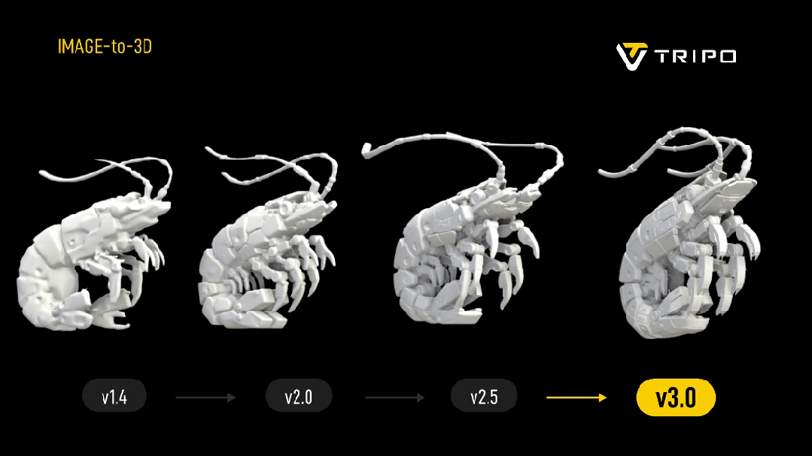

Tripo P1.0

| 生成速度 | 5s以内 |
| 面数 | 500 – 2万面 |
| 特征 | 清晰边缘，干净拓扑 |
| 适用 | 游戏管线 / UGC / 移动端 |
Tripo H3.1

| 生成速度 | 30 – 60s |
| 面数 | 100万 – 200万面 |
| 特征 | 高保真极致细节 |
| 适用 | 3A / 3D打印 / 工业设计 |
终极目标
Tripo H 系列在做什么
通过 AI 自动根据图像 / 文本 / 其他各种输入，获取高保真、极致细节的 3D 模型


数据壁垒：5500万稀缺高质量3D原生资产 + 自研高效数据管线持续扩增
5500万+
高质量人工3D资产
10x
领先第二名友商
>50%
绝版数据，不可复购
25–250亿
市场重构成本
数据来源：数百个渠道系统性收集——游戏工作室 / 建模师 / 工业设计师 / CG艺术家 / 独立游戏开发者 / 3D打印社区等
工程壁垒：把数据高效转化为模型能力
数据标准
全人工制作
非扫描非合成
扫描数据
破损缺面精修成本高

合成数据
过拟合风险